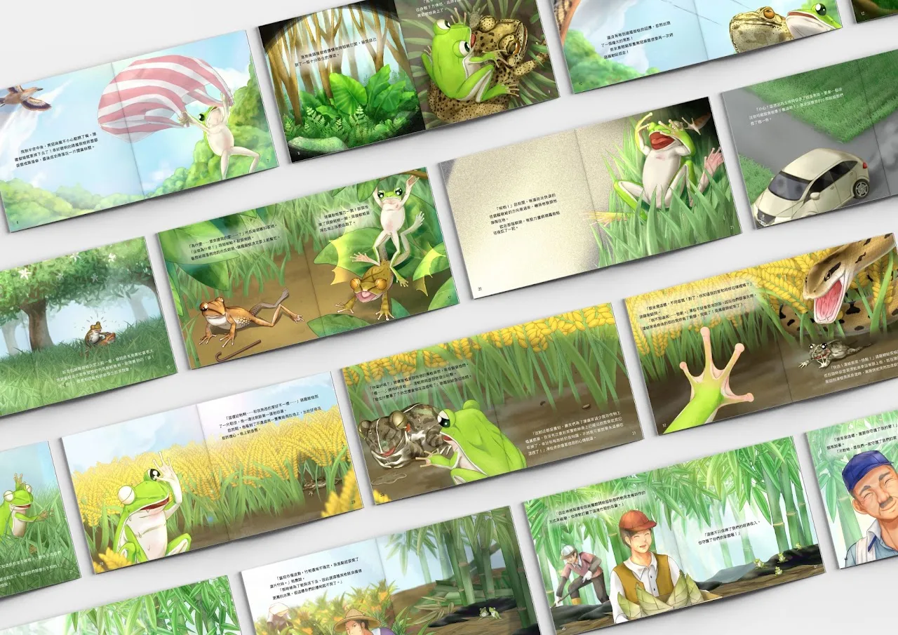
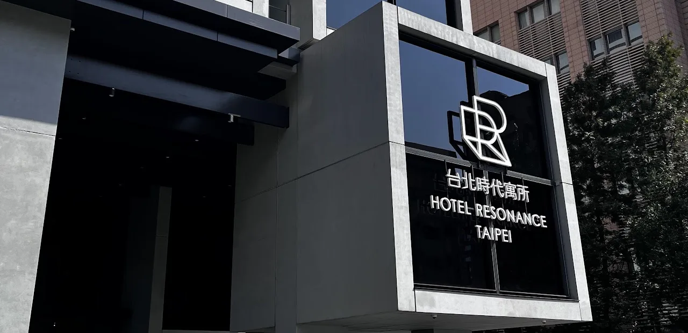

CONCEPT
區域概念
CONCEPT區域概念
每次的作業都應是驅動程式， 讓設計者有展示實力的機會!
NTUT
National Taipei University of Technology
ON THE ROAD南下北上
- @台南
- @新竹
- @台北
MORE TO EXPLORE更多
繼續瀏覽其他單元。

區域概念
CONCEPT區域概念
每次的作業都應是驅動程式， 讓設計者有展示實力的機會!
NTUT
National Taipei University of Technology
ON THE ROAD南下北上
MORE TO EXPLORE更多
繼續瀏覽其他單元。